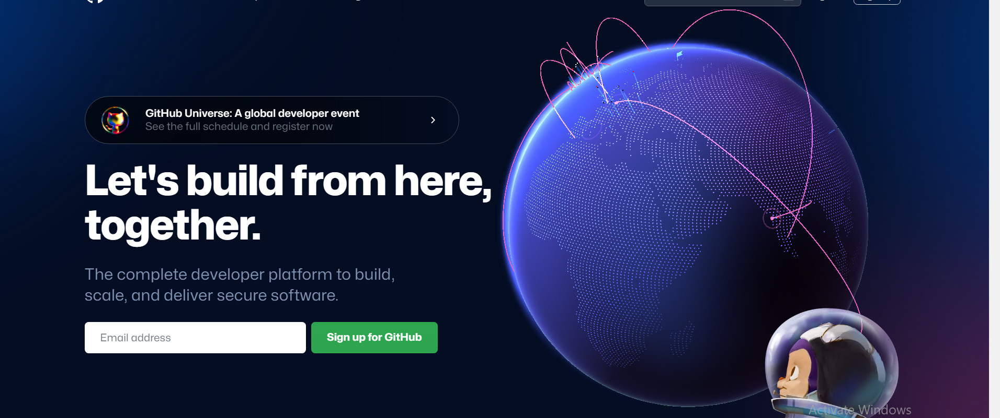
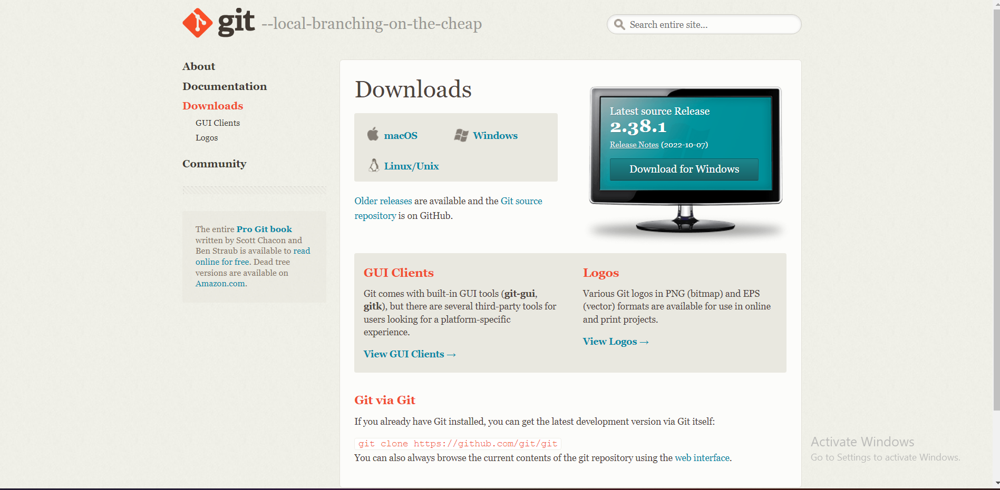
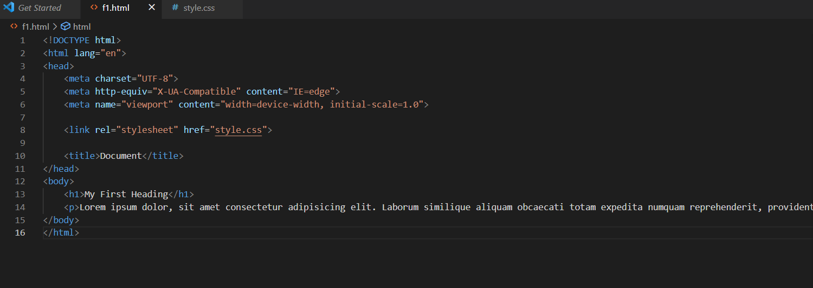
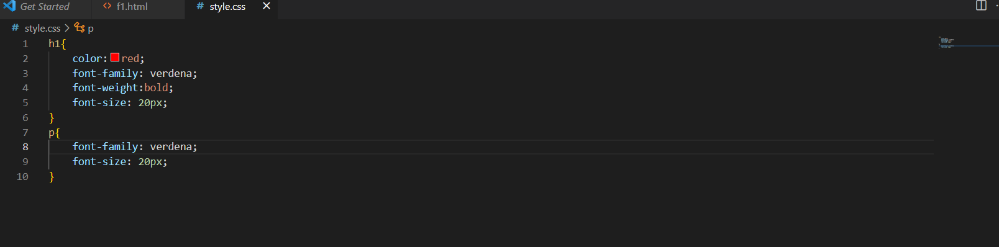
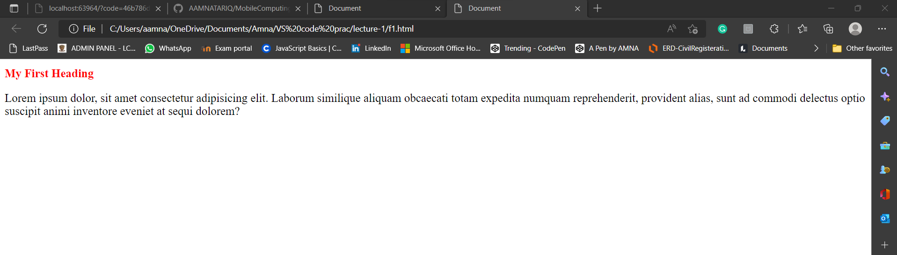
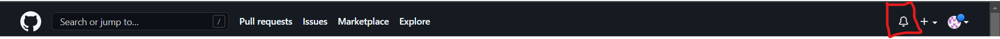

How to use gitHub
How to use gitHub
GitHub is a code hosting platform for version control and collaboration. It lets you and others work together on projects from anywhere.
This tutorial teaches you GitHub essentials like repositories, branches, commits, and pull requests. You'll create your own Hello World repository and learn GitHub's pull request workflow, a popular way to create and review code.
In this quickstart guide, you will:
- Create and use a repository
- Start and manage a new branch
- Make changes to a file and push them to GitHub as commits
- Open and merge a pull request
Create an account on github https://github.com
You can also download git https://git-scm.com/downloads
create html and css Files
Create an html and css file as shown in the picture below. There is some dummy code written inside which would help us in practicing different git commands.
Create an html file named f1.html.
Create a css file named style.css.
git init
This command initializes a local git repository and makes a .git folder where project is made. This can be seen in the pictures below.
Command git init was written in the terminal on VS code.

In the picture below you can see that .git folder was made in the local repository.

git status
The git status command displays the state of the working directory and the staging area. It lets you see which changes have been staged, which haven't, and which files aren't being tracked by Git. The pictures below show what happens when we give this command.

git add
git add. The git add command adds a change in the working directory to the staging area. It tells Git that you want to include updates to a particular file in the next commit. However, git add doesn't really affect the repository in any significant way—changes are not actually recorded until you run git commit . The pictures below show what happens when we give this command.

Now by add f1.html, we will check the status. Status shows that f1.html is tracked while style.css is untracked.

git add .
The git add command adds a change in the working directory to the staging area. It tells Git that you want to include updates to a particular file in the next commit. However, git add doesn't really affect the repository in any significant way—changes are not actually recorded until you run git commit. It adds files at once and we need not to add files separately. The pictures below show what happens when we give this command.

Now using git status command, we check the current status of the files.

git rm --cached f1.html
The git rm command removes a file from a Git repository. This command removes a file from your file system and then removes it from the list of files tracked by a Git repository. The –cached flag lets you delete a file from a Git repository without deleting it on your file system.
Now using git status command, we check the current status of the files.

git add .
The git add command adds a change in the working directory to the staging area.
Now using git status command, we check the current status of the files.

git commit -m "message"
commits a change set from the working directory into the repository. To make the commits, we use the command git commit -m "message" The picture below shows what happens when we use this command.

github Explore
Explore can be used to see the latest repositories and developers. This option is present in the navigation bar.
github Notifications
Notifications options, present on the top right side of the navigation bar, is used to see the current notifications. it is shown by the bell symbol.
Create a repository on GitHub
In the upper-right corner of any page, use the drop-down menu, and select New repository.

Provide details of repository on your account
Now, to make a repository fill in the nescessary information. Name your repository, here it is named as Lecture-1 and repository's status is set to private.
Setting status to private means that only you can access the repository. While anyone outside won't be able to access it.

Create new repository, by clicking the button at the end of the page.

Github Repository
As, soon as the repository is made, page is opened which shows the url of repository.
The repository you made has the url https://github.com/AAMNATARIQ/Lecture-1.git, following picture shows it.

Adding remote repository
To make a remote repository we use the command git remote add origin url ,where url of repository is the url of the repository shown on step 14. Following picture shows it.

status of git is checked by using the command git status, which shows that there are no changes to commit. This is shown in the image below.

There occurred an error, in case of that error, write the following command as suggested on the terminal. The command is git push --set-upstream origin master, the error is removed then.

Files present on github
Now, files present on remote repository. Following picture shows it.

Now adding new static folder to it, modifying f1.html and adding and coomiting the change. After commit command push the updated files to remote git, to make changes there.

Git Clone - clone a repository
git clone is primarily used to point to an existing repo and make a clone or copy of that repo at in a new directory, at another location. The original repository can be located on the local filesystem or on remote machine accessible supported protocols. The git clone command copies an existing Git repository.. Following picture shows it.

Now in another folder made on our computer, cloning lecture-1 repository from a remote repository we make chnages in the repository on our local repository. This picture below shows it.
By default master branch is what it is, but we make a new branch b1 using the following command as shown below.

Now using the git checkout b1 command, we now work on the b1 branch.

Now while making some changes and then pushing it, causes an error to occur. This is becausse there is a repository which is pushing to the same ref. Now before pushing again, you might want to pull and then push.

Now pull the changes made, check the status and push the changes to the remote repository on github.

Now, you can see the required changes, made in local repository, pulled from local and pushed in remote repository.

Clink on the pen symbol as shown below, to edit file.

Edit file and then commit changes by writing a commint message as shown below.

We use the git pull command to get changes made on remote github repository to local repository.

There now exists a merge error, known as merge conflict, which occurs when same line or same file is being edited as shown below.

paragraph tag added in github remote repository.

paragraph tag added in local repository.

merge conflict occured which can be seen in the picture below when changes made in different repositories loacal and remote are made at same place

Resolving merge conflict by running command git commit -am "message" , this is shown in picture below.

Branching and Merging
Branching and merging enables multiple users to work on the same model at the same time. To do this, the project owner creates a branch of the root project, which is a copy of the project. A team member can modify the branch as required, independently of the root project.
Create Branch
Git branches are created in order to isolate specific Git commits from the rest of your main Git history. If you main Git history is based on the master branch, you can create a separate Git branch in order to develop new features and merge them later on.
Three main work done through branchig are as follows;
- git branch
- git check
- git merge
The following image shows current available branches by using git branch command. Then, shifted to new branch using command gi checkout -b newbranch. We can check the branch now by using git branch command.

Switching to Different branches
Now, switch to master branch

Now, switch to new branch and make some changes. Like, below image shows that a p tag was added.

Commit changes by using the command below, being on newbranch

Now, git checkout master which remains same, despite we made changes in newbranch.

Merge Branches
Once you've completed work on your branch, it is time to merge it into the main branch. Merging takes your branch changes and implements them into the main branch. Merge both the different branches.

Deleting Branches
you can also delete the branches you made by using git branch -D newbranchcommand and check it using git branch command. which shows master branch only. So, new branch that we created was deleted successfully.

Commit History
The git log command displays committed snapshots. It lets you list the project history, filter it, and search for specific changes. While git status lets you inspect the working directory and the staging area, git log only operates on the committed history.
git log
Now, git log command displays the history of commands we executed. Following picture shows it.